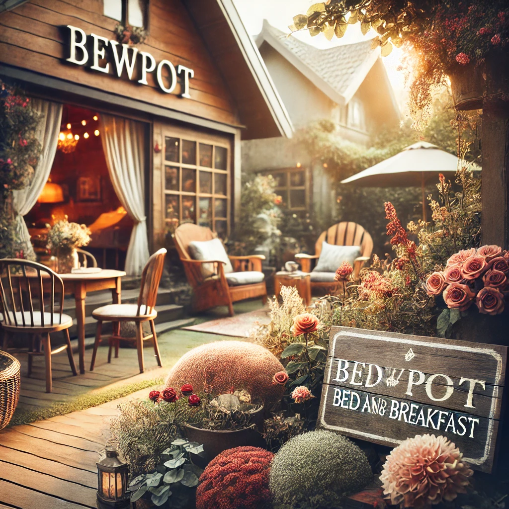

Aumenta le Prenotazioni del Tuo B&B o Agriturismo con un Sito Web Efficiente
Perché le strutture ricettive hanno bisogno di un sito web?
Prenotazioni dirette senza commissioni
Piattaforme come Booking.com o Airbnb sono utili, ma comportano commissioni che riducono il tuo guadagno. Con un sito web ben ottimizzato, puoi incentivare le prenotazioni dirette offrendo vantaggi come sconti o extra esclusivi.
Raccontare la tua unicità
Un sito web ti permette di raccontare la storia della tua struttura, evidenziando cosa la rende unica.
- Esempio per un B&B: L’atmosfera accogliente, la colazione fatta in casa.
- Esempio per un agriturismo: La connessione con la natura, la cucina tradizionale, le esperienze offerte.
- Esempio per affitti brevi: La posizione strategica, il design degli interni, i servizi extra.
Migliorare la visibilità online
Un sito ottimizzato per la SEO ti aiuta a essere trovato più facilmente su Google quando i viaggiatori cercano termini come "B&B in Toscana" o "agriturismo con piscina vicino Firenze".
Fidelizzare i clienti
Un sito è anche uno strumento per mantenere i contatti con gli ospiti passati, inviare offerte personalizzate e incoraggiare visite future.
Caratteristiche essenziali di un sito web per strutture ricettive
Design visivamente accattivante
Le immagini sono fondamentali nel turismo: investire in fotografie professionali della tua struttura e dei dintorni è un must.
- Mostra camere, aree comuni, giardini e attrazioni locali.
- Usa colori e layout che trasmettano l’atmosfera della tua struttura (es. toni caldi per un B&B accogliente, verdi e naturali per un agriturismo).
Sistema di prenotazione integrato
Un sistema di prenotazione online facile da usare è cruciale per convertire i visitatori del sito in ospiti.
- Mostra disponibilità in tempo reale.
- Offri la possibilità di scegliere camere, pacchetti o extra.
- Integra pagamenti sicuri con carta di credito o PayPal.
Sezione dedicata ai servizi
I viaggiatori vogliono sapere cosa offri prima di prenotare. Crea una sezione chiara che elenchi:
- Servizi inclusi (es. colazione, Wi-Fi gratuito, parcheggio).
- Esperienze aggiuntive (es. tour locali, degustazioni, noleggio biciclette).
- Regole della casa (es. check-in/check-out, politiche di cancellazione).
Funzionalità avanzate per un sito di successo
Esperienze personalizzate
Offri pacchetti o esperienze uniche direttamente dal sito, come:
- Weekend romantici per coppie.
- Esperienze enogastronomiche o tour guidati.
- Sconti per soggiorni lunghi o fuori stagione.
Integrazione con i social media
Collega il sito ai tuoi profili social per condividere foto, offerte last-minute e testimonianze. I viaggiatori apprezzano contenuti autentici che raccontano la vita nella tua struttura.
Blog per attrarre nuovi visitatori
Un blog con articoli su eventi locali, consigli di viaggio o guide sulle attrazioni vicine può aiutarti a posizionarti come esperto della tua zona, migliorando anche il tuo SEO.
- Esempio: "5 borghi da visitare vicino al nostro agriturismo" o "Cosa fare in un weekend nel Chianti".
Offerte esclusive per prenotazioni dirette
Incentiva i visitatori del sito a prenotare direttamente con offerte come:
- Sconti per prenotazioni anticipate.
- Check-out tardivo gratuito.
- Una bottiglia di vino o un omaggio all’arrivo.
Come massimizzare l’impatto del tuo sito
Mobile-first
Assicurati che il sito sia ottimizzato per dispositivi mobili, visto che molti viaggiatori cercano e prenotano da smartphone.
Caricamento rapido
Un sito lento può allontanare i visitatori. Usa immagini ottimizzate e hosting performante.
Evidenzia la tua unicità
Se hai una caratteristica speciale (es. vista panoramica, animali in fattoria, spa), mettila in risalto!
Conclusione
Per B&B, agriturismi e affitti brevi, un sito web accattivante è la chiave per attrarre ospiti e aumentare le prenotazioni dirette. Investire in design, SEO e funzionalità avanzate non solo migliora la tua visibilità online, ma ti aiuta anche a raccontare la tua storia e creare esperienze memorabili per i tuoi ospiti.